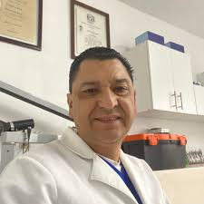
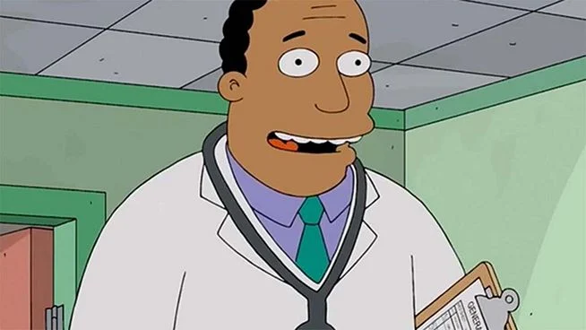

Bienvenidos a la clinica odontologica del futuro
En Dentalclean, combinamos el talento humano con la tecnologia dental mas avanzada para ofrecerte diagnosticos precisos y tratamientos minimamente invasivos. Nos define la precision, la estetica y el deseo de transformar vidas a traves de sonrisas perfectas. Creemos que cada paciente es unico, por eso disenamos planes a tu medida en un espacio moderno y confortable.
Nuestro Equipo de Especialistas
Dr. Kevin Da Costa
Especialista en ortodoncia invisible y diseño de sonrisa. Con una destacada trayectoria, el Dr. Da Costa se enfoca en devolverle la confianza a sus pacientes utilizando tecnología 3D y planificaciones precisas para lograr resultados estéticos impecables.

Dr. Nilson Guanipa
Experto en implantología y cirugía oral. Su precisión quirúrgica y su trato empático garantizan que cada procedimiento, desde una extracción hasta un implante de alta complejidad, sea una experiencia totalmente segura, rápida y confortable.

Dr. Jose Miquilena
Apasionado por la odontología estética y la rehabilitación funcional. El Dr. Miquilena esculpe sonrisas utilizando materiales de alta gama, logrando una combinación perfecta entre salud bucal óptima y una belleza completamente natural.